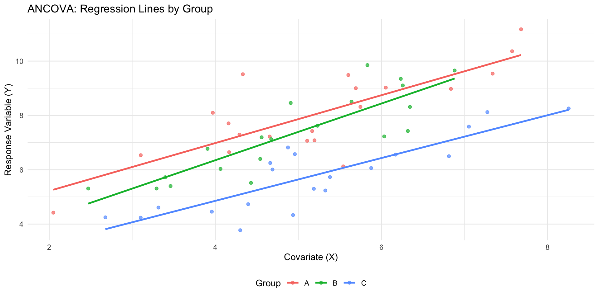
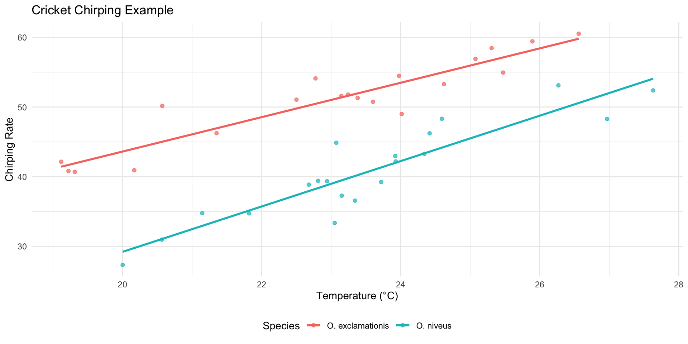
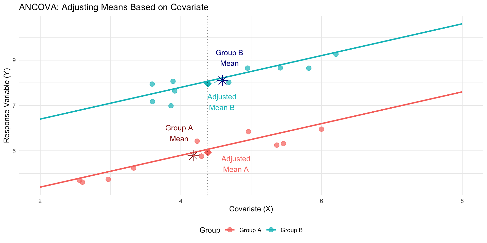
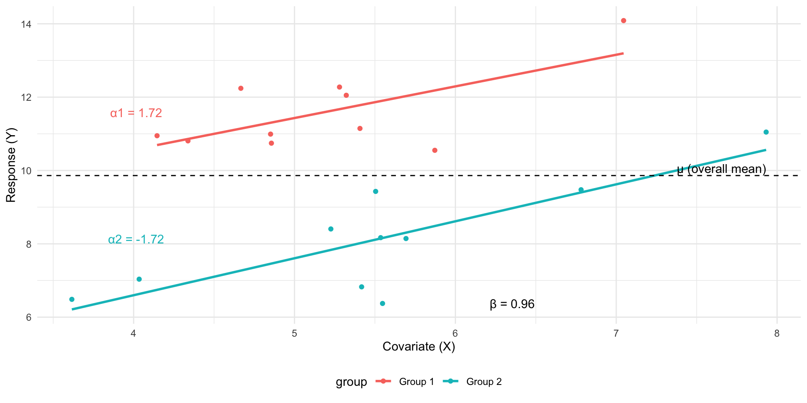
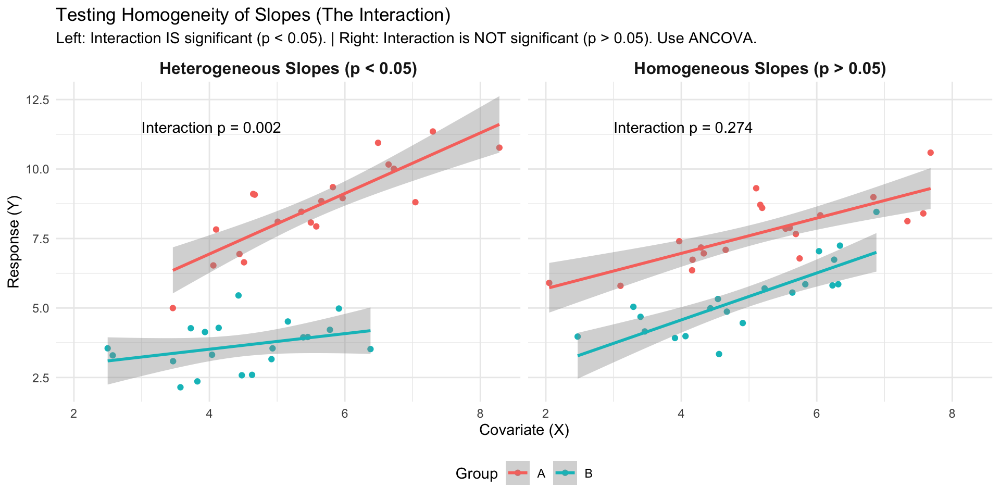
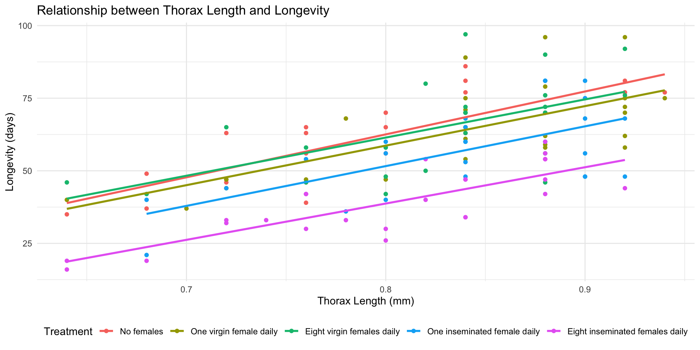
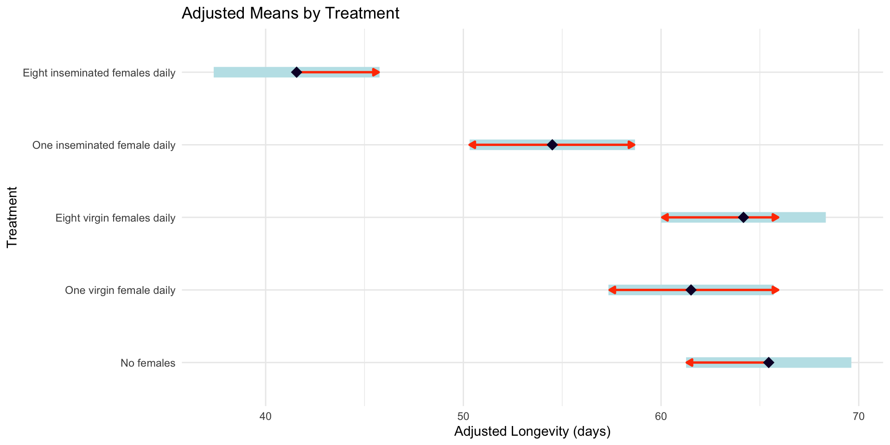
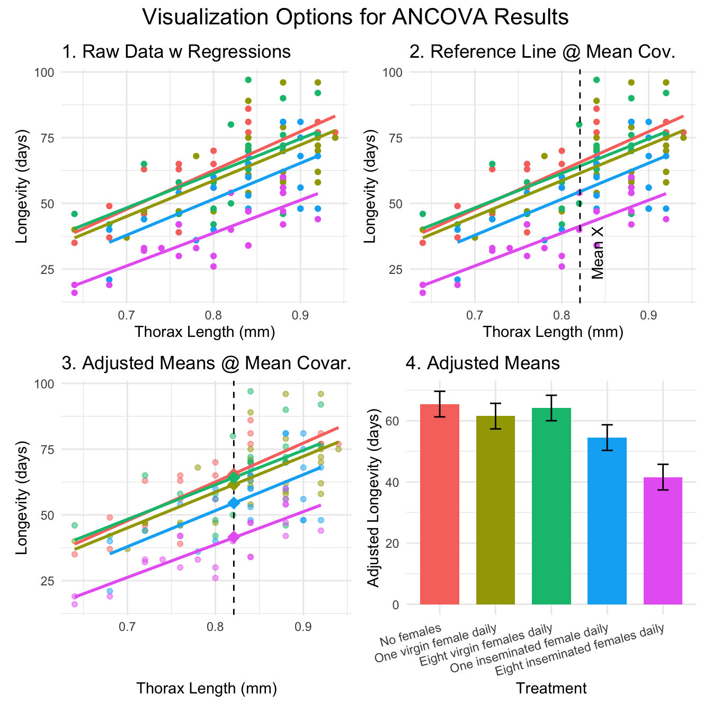
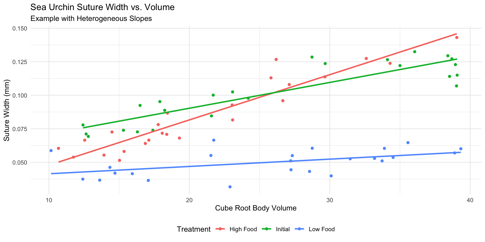
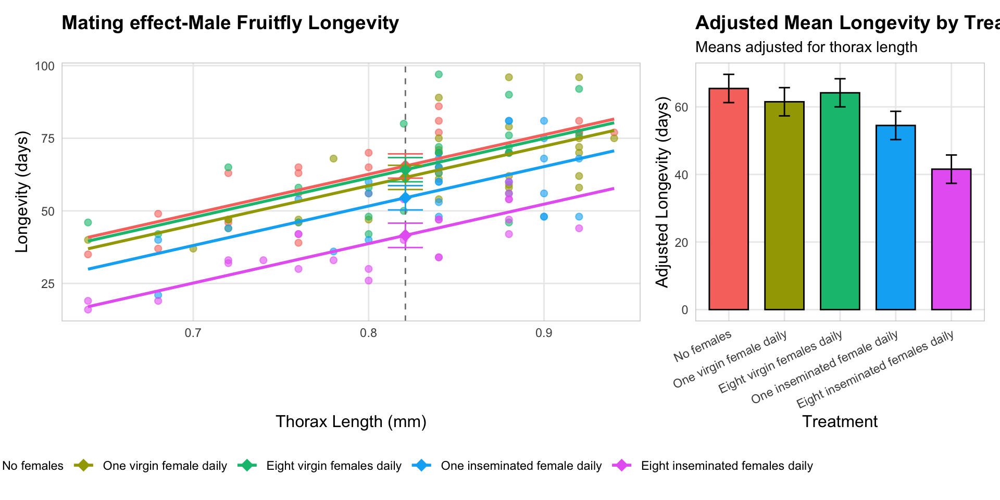

Lecture 15 - ANCOVA
Bill Perry
Lecture 14: Review
Review
- General Linear Models (GLM)
- Gaussian GLMs (normal distribution)
- Poisson GLMs (count data)
- Logistic GLMs (binary outcomes)
- Model assumptions and diagnostics
- Connection to ANOVA and linear models
Lecture 15: ANCOVA Overview
Overview
- Analysis of covariance (ANCOVA):
Introduction to ANCOVA
The ANCOVA workflow in R
When to use ANCOVA
Building the ANCOVA model in R
Assumptions of ANCOVA
- Homogeneity of slopes (The critical test!)
Interpreting results & “Adjusted Means”
Handling violations (heterogeneous slopes)
Introduction to ANCOVA
What is ANCOVA?
- ANCOVA = Analysis of COVAriance
- It’s a combination of regression and ANOVA
- It’s used when you have:
A continuous response variable (Y)
A categorical predictor (Factor A)
A continuous predictor (Covariate X)
- Common use:
- Compare means of factor levels (groups), after statistically adjusting for the effect of the continuous covariate.
- Another use:
- Determine whether two or more regression lines differ in slopes and/or intercepts.
When to Use ANCOVA
- Common Applications of ANCOVA
- Increasing statistical power
The covariate (e.g., body size, initial temperature) explains some of the “noise” (residual error) in the response variable.
By “removing” this variation, we reduce the residual error, making it easier to detect the true effect of our categorical factor.
This results in a more powerful test of treatment effects.
- Adjusting for confounding variables
Imagine your treatment groups happen to differ in their average covariate value (e.g., Group A was tested in a warmer room than Group B).
ANCOVA allows you to separate the treatment effect from the covariate effect.
- Testing equality of regression lines
- Do treatments have the same relationship (slope) with a continuous variable?
- Increasing statistical power
ANCOVA Example: Cricket Chirping
Cricket Chirping Example
- Want to compare chirping rate of two cricket species:
- Oecanthus exclamationis
- Oecanthus niveus
- But…
- Measured rates at different temperatures.
- Range of temperatures differed between species.
- There is an apparent relationship between pulse rate and temperature.
- Problem: Are the species different, or are they just at different temperatures?
- Solution: ANCOVA lets us adjust for the temperature effect to get a clearer, more powerful test of the species effect. .

ANCOVA Linear Model: Conceptual Framework
- The ANCOVA Model
- Key concept: Dfference between “unadjusted” group means and “adjusted” means
- In this visualization:
- Group Means (asterisks): The raw average X and Y for each group.
- Group A and Group B have different mean X values. Comparing directly misleading
- Adjusted Means (triangles): ANCOVA statistically “moves” each group mean along regression line to single, common X value (the overall mean X).
- ANCOVA compares heights (the Y values) of adjusted means.
- Adjustment “levels the playing field,” estimating each group’s mean if all groups had same average covariate value
ANCOVA Model Visualization

Mathematical Model for ANCOVA
- Single-factor ANCOVA with
- factor A (p levels, i = 1 to p), a continuous covariate (x), and response variable (y): \(Y_{ij} = \mu + \alpha_i + \beta(X_{ij} - \bar{X}) + \varepsilon_{ij}\)
- Where:
- \(Y_{ij}\) = response value for observation j in level i of factor A
- \(\mu\) = overall mean
- \(\alpha_i\) = effect of level i of factor A (what we test in ANOVA)
- \(\beta\) = common regression slope relating Y to X (what we test in Regression)
- \(X_{ij}\) = covariate value for observation j in level i of factor A
- \(\bar{X}\) = mean value of covariate
- \(\varepsilon_{ij}\) = error term
ANCOVA Parameters Interpretation
- Interpretation of Parameters
- \(\mu\) = overall mean response
- \(\alpha_i\) = effect of level i (difference between group’s adjusted mean and overall mean)
- \(\beta\) = pooled within-group regression coefficient (the slope)
- \(X_{ij}\) = covariate value for observation j in group i
- \(\bar{X}\) = overall mean of covariate
- \(\varepsilon_{ij}\) = unexplained error
- Model assumes homogeneous slopes (i.e., \(\beta\) same for all groups) .

Building the ANCOVA Model in R
- Remember
lm(y ~ predictor).- ANCOVA combines the predictors from ANOVA and regression.
- Simple Linear Regression:
- Predict y using a continuous variable x.
model_reg <- lm(y ~ x, data = mydata)
- Predict y using a continuous variable x.
- One-Way ANOVA:
- We want to compare y among groups in a categorical factor A.
model_aov <- lm(y ~ A, data = mydata)
- We want to compare y among groups in a categorical factor A.
- ANCOVA (Additive Model):
- Compare y among groups in A, after accounting for effect of x.
- Add terms together
model_ancova <- lm(y ~ A + x, data = mydata)
- Model assumes slope of y ~ x relationship is same for all groups in A.
Building the ANCOVA Model in R
- ANCOVA (Interaction Model):
- What if the slopes are different for each group?
- Test for interaction between factor and covariate.
model_int <- lm(y ~ A * x, data = mydata)
- Shorthand for:
lm(y ~ A + x + A:x, data = mydata) - The
A:xterm tests if the slopes are different.
ANCOVA in R: The 3-Step Workflow
Step 1: Test for Homogeneity of Slopes - Always Start Here
- Fit interaction model first - tests key assumption that all groups share same slope.
Step 2: Examine the Interaction Term
- ANOVA table for
model_intand find the p-value for interaction term (A:x).
- If p > 0.05 (e.g., p = 0.4) - interaction IS NOT significant - slopes are homogeneous (parallel).
- If p < 0.05 (e.g., p = 0.02): - interaction IS significant - slopes heterogeneous (NOT parallel).
- ** standard ANCOVA model (
y ~ A + x) inappropriate** - Analysis stops here and interpret interaction (often most interesting result!)
- ANOVA table for
ANCOVA in R: The 3-Step Workflow
Step 3: Run the ANCOVA (Additive Model)
- If interaction not significant, run the simpler additive model the final ANCOVA model.
Analysis of Variance for ANCOVA: Partitioning

ANOVA Table for ANCOVA
The ANOVA table for a single-factor ANCOVA has these components:
## # A tibble: 4 × 6
## Source df `Sum of Squares` `Mean Square` `F-ratio` `Expected MS`
## <chr> <chr> <chr> <chr> <chr> <chr>
## 1 Factor A (adjust… (p-1) SS_A(adj) "MS_A(adj) =… "MS_A(ad… "σ² + n∑α²/(…
## 2 Covariate 1 SS_Covariate "MS_Covariat… "MS_Cova… "σ² + β²∑(X-…
## 3 Residual n-p-1 SS_Residual "MS_Residual… "" "σ²"
## 4 Total n-1 SS_Total "" "" ""Null Hypotheses in ANCOVA
Homogeneity of Slopes (Test this first!)
\[H_0: \beta_1 = \beta_2 = ... = \beta_p\]
Are the regression slopes the same for all groups?
Test with the A:x interaction term in lm(y ~ A * x).
Treatment Effect (adjusted for covariate)
\[H_0: \alpha_1 = \alpha_2 = ... = \alpha_p = 0\]
Are the adjusted group means equal?
Test with F = MS_A(adj)/MS_Residual (the ‘A’ term in lm(y ~ A + x)).
Covariate Effect
\[H_0: \beta = 0\]
Is there a relationship between the covariate and the response?
Test with F = MS_Covariate/MS_Residual (the ‘x’ term in lm(y ~ A + x)).
Visualization of Homogeneity of Slopes
Parallel vs. Non-Parallel Slopes

Partridge Example: Data Overview
ANCOVA on Longevity of Male Fruitflies

Partridge Example: Step 1 - Test Homogeneity
- Testing Homogeneity of Slopes
- First, fit interaction model.
- The p-value for the interaction term (THORAX:treatment) is xl.
- Since this value is > 0.05, we conclude the slopes are homogeneous.
- We can proceed to Step 3 and fit the simpler additive model.
## Anova Table (Type III tests)
##
## Response: LONGEV
## Sum Sq Df F value Pr(>F)
## (Intercept) 2963.8 1 26.0142 1.349e-06 ***
## THORAX 12805.8 1 112.3988 < 2.2e-16 ***
## treatment 36.9 4 0.0810 0.9881
## THORAX:treatment 42.5 4 0.0933 0.9844
## Residuals 13102.1 115
## ---
## Signif. codes: 0 '***' 0.001 '**' 0.01 '*' 0.05 '.' 0.1 ' ' 1Partridge Example: Step 3 ANCOVA Analysis
- Since the interaction was not significant, we re-run the model without it.
- Interpretation:
- THORAX: covariate highly significant
- thorax length explains significant amount of variance in longevity
- treatment: treatment effect, after adjusting for thorax length, is highly significant
- Interpretation:
## Anova Table (Type III tests)
##
## Response: LONGEV
## Sum Sq Df F value Pr(>F)
## (Intercept) 3069.7 1 27.791 6.123e-07 ***
## THORAX 13168.9 1 119.219 < 2.2e-16 ***
## treatment 9611.5 4 21.753 1.719e-13 ***
## Residuals 13144.7 119
## ---
## Signif. codes: 0 '***' 0.001 '**' 0.01 '*' 0.05 '.' 0.1 ' ' 1Partridge Example: Getting Adjusted Means
- The ANOVA table tells us the treatments are different, but not which ones.
Use
emmeanspackage to get the adjusted means / perform pairwise comparisonsThe “estimated marginal mean” (or adjusted mean)
predicted longevity for each group, assuming an average thorax length
This is the “level playing field” comparison.
## treatment emmean SE df lower.CL upper.CL
## No females 65.4 2.11 119 61.3 69.6
## One virgin female daily 61.5 2.11 119 57.3 65.7
## Eight virgin females daily 64.2 2.10 119 60.0 68.3
## One inseminated female daily 54.5 2.11 119 50.3 58.7
## Eight inseminated females daily 41.6 2.12 119 37.4 45.8
##
## Confidence level used: 0.95Partridge Example: Pairwise Comparisons
- Pairwise Comparisons of Adjusted Means to see which groups differ
Interpretation:
The
pairs()output gives p-values for all combinations.The plot shows these comparisons visually. Red arrows connect any groups that are NOT significantly different.
Here, “One virgin female” and “One inseminated female” are not different from each other, but all other comparisons are significant.
## contrast estimate SE
## No females - One virgin female daily 3.93 3.00
## No females - Eight virgin females daily 1.28 2.98
## No females - One inseminated female daily 10.95 3.00
## No females - Eight inseminated females daily 23.88 2.97
## One virgin female daily - Eight virgin females daily -2.65 2.98
## One virgin female daily - One inseminated female daily 7.02 2.97
## One virgin female daily - Eight inseminated females daily 19.95 3.01
## Eight virgin females daily - One inseminated female daily 9.67 2.98
## Eight virgin females daily - Eight inseminated females daily 22.60 2.99
## One inseminated female daily - Eight inseminated females daily 12.93 3.01
## df t.ratio p.value
## 119 1.311 0.6849
## 119 0.428 0.9929
## 119 3.650 0.0035
## 119 8.031 <0.0001
## 119 -0.891 0.8996
## 119 2.361 0.1336
## 119 6.636 <0.0001
## 119 3.249 0.0129
## 119 7.560 <0.0001
## 119 4.298 0.0003
##
## P value adjustment: tukey method for comparing a family of 5 estimatesPartridge Example: Pairwise Comparisons
- Pairwise Comparisons of Adjusted Means to see which groups differ
Interpretation:
The
pairs()output gives p-values for all combinations.The plot shows these comparisons visually. Red arrows connect any groups that are NOT significantly different.
Here, “One virgin female” and “One inseminated female” are not different from each other, but all other comparisons are significant.

Visualizing ANCOVA Results
Visualization Options for ANCOVA

What if Slopes are HETEROGENEOUS? (p < 0.05)
- Example: Sea Urchin Shrinking w/ Heterogeneous Slopes
- Constable (1993) studied sea urchin test shrinking:
Compared suture widths between treatments
Three groups: high food, low food, initial sample
Covariate: body volume (cube root transformed)
- The analysis showed:
Significant interaction between treatment and covariate
Heterogeneous slopes across treatments
- Relationship between body volume and suture width depends on treatment group
- Standard ANCOVA is invalid.
.

Handling Heterogeneous Slopes
If the interaction term is significant (p < 0.05):
Report interaction! often more interesting biological result than simple mean differences
Analyze slopes: Use emmeans to get slopes for each group.
Johnson-Neyman procedure: advanced method to identify regions of covariate (X-axis) where groups are (and are not) significantly different.
Separate regressions: Analyze each group separately (less powerful).
## Anova Table (Type III tests)
##
## Response: suture_width
## Sum Sq Df F value Pr(>F)
## (Intercept) 0.0093295 1 104.97 2.828e-15 ***
## volume 0.0197876 1 222.63 < 2.2e-16 ***
## treatment 0.0020070 2 11.29 6.064e-05 ***
## volume:treatment 0.0062129 2 34.95 4.453e-11 ***
## Residuals 0.0058662 66
## ---
## Signif. codes: 0 '***' 0.001 '**' 0.01 '*' 0.05 '.' 0.1 ' ' 1Interpretation of Heterogeneous Slopes
- With heterogeneous slopes, interpretation shifts from “adjusted means” to “regions of significance”:
- Initial > Low Food when cube root body volume > 2.95
For large urchins, initial sample has wider sutures than low food urchins - High Food > Initial when cube root body volume > 1.81
For most urchins, high food treatment results in wider sutures than initial samples. - High Food > Low Food when cube root body volume > 2.07
For most medium to large urchins, high food results in wider sutures than low food.
- Initial > Low Food when cube root body volume > 2.95
- Biological interpretation is food regime affects suture width differently depending on urchin size
Assumptions of ANCOVA
Key Assumptions
- Independence of observations
Samples are random and independent. - Normal distribution of residuals
Check with QQ plots. - Homogeneity of variances (Homoscedasticity)
Equal variances across groups.
Check with residual vs. fitted plots. - Linearity
A linear relationship exists between Y and X within each group.
Check with scatterplots (we did this!). - Homogeneity of regression slopes (The critical one!)
Regression slopes are equal across all groups.
We tested this first! (the A:x interaction).
- Independence of observations
Checking Assumptions in R
- For assumptions 2 and 3, we check the final model (the additive one, if appropriate).
- Interpretation:
- Residuals vs. Fitted: The red line should be roughly flat at 0. Looks good.
- Normal Q-Q: Points should fall along the dashed line. Looks good.
- Scale-Location: Red line should be flat (tests homogeneity of variance). Looks good.
- Residuals vs. Leverage: No points should be in the top/bottom right (high leverage/influence). Looks good.
- Conclusion: The assumptions are met.

Robust ANCOVA Approaches
- Non-Parametric Alternatives
- When ANCOVA assumptions are badly violated (especially normality or homogeneity of variance), consider:
- Rank Transformation (Simplest)
- Rank transform both Y and X variables.
- Run standard ANCOVA on the ranked data.
lm(rank(y) ~ rank(x) + A)
- Bootstrapping
- Use bootstrapping to estimate parameters without assuming normality.
- Quantile Regression
- Models relationships at different quantiles (e.g., the median) instead of the mean.
- Permutation Tests
- Randomization tests of treatment effects. .
## Anova Table (Type III tests)
##
## Response: rank_LONGEV
## Sum Sq Df F value Pr(>F)
## (Intercept) 18783 1 38.236 9.121e-09 ***
## rank_THORAX 54314 1 110.564 < 2.2e-16 ***
## treatment 40447 4 20.584 6.536e-13 ***
## Residuals 58458 119
## ---
## Signif. codes: 0 '***' 0.001 '**' 0.01 '*' 0.05 '.' 0.1 ' ' 1
## P-value (parametric): 1.719359e-13
## P-value (rank-based): 6.536035e-13Note: The results are very similar, which gives us more confidence in our original parametric test.
Writing Up ANCOVA Results
Scientific Writing Example
Here’s how you might write up ANCOVA results for publication:
“We analyzed the effects of mating strategy on male fruitfly longevity using analysis of covariance (ANCOVA), with thorax length as a covariate. Before conducting the main analysis, we tested the homogeneity of slopes assumption and found no significant interaction between treatment and thorax length (F₄,₁₁₅ = xxx , indicating that the effect of body size on longevity was consistent across treatments.
The ANCOVA revealed significant effects of both treatment (F₄,₁₁₉ = xxxx and thorax length (F₁,₁₁₉ = xxxx, P < 0.001) on longevity. Thorax length was positively associated with longevity…
After adjusting for body size, males with no female partners lived significantly longer (adjusted mean ± SE: xxxx` days) than males in any other treatment group. Pairwise comparisons using Tukey’s HSD test indicated significant differences between most treatment groups (P < 0.05) except between the ‘One virgin female’ and ‘One inseminated female’ groups (P = x).”
Publication Quality Figure

Summary
- Purpose:
- ANCOVA combines regression and ANOVA.
- It increases power by accounting for a continuous covariate.
- It adjusts for confounds by comparing “adjusted means.”
- The Analysis Workflow
- Step 1: Always test for homogeneity of slopes first (
lm(y ~ A * x)). - Step 2: If slopes are homogeneous (p > 0.05), proceed to the additive model (
lm(y ~ A + x)). - Step 3: If slopes are heterogeneous (p < 0.05), STOP and interpret the interaction.
- Step 1: Always test for homogeneity of slopes first (
- Interpretation
- Use
car::Anova(model, type = "III")to get the ANOVA table. - Use
emmeans()to get adjusted means and pairwise comparisons.
- Use
- Assumptions
Independence of observations
Normal distribution of residuals
Homogeneity of variances
Linearity of relationships within groups
Homogeneity of regression slopes (The most important one!)